Here are the known configurations where points may be 1 unit from a side:
| 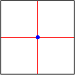 2 |
| 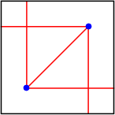 2 - 1/√2 = 1.292+ | 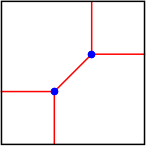 2 + 1/√2 = 2.707+ | 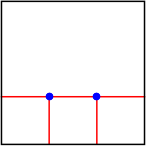 3 |
| 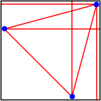 2-(√6+√2)/4 = 1.034+ | 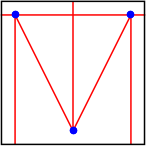 2 - 2/√5 = 1.105+ | 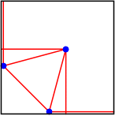 2-(√6-√2)/4 = 1.741+ | 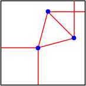 2+(√6-√2)/4 = 2.258+ | 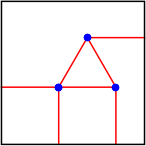 5/2 = 2.5 |
| 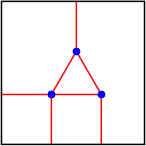 2 + √3/2 = 2.866+ | 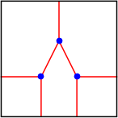 2 + 2/√5 = 2.894+ | 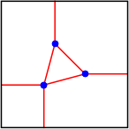 2+(√6+√2)/4 = 2.965+ | 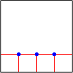 4 |
| 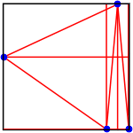 1.003+ | 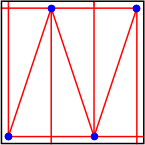 2 - 3/√10 = 1.051+ | 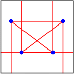 7/5 = 1.4 | 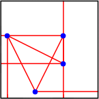 2 - 1/√5 = 1.552+ | 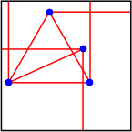 (9 - √7)/4 = 1.588+ |
| 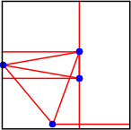 1.656+ | 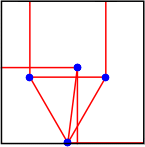 1.874+ | 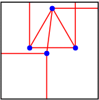 2.126+ | 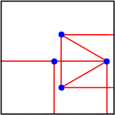 3 - √3/2 = 2.133+ | 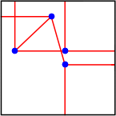 2.274+ |
| 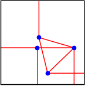 2.278+ | 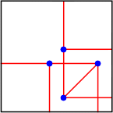 3 - 1/√2 = 2.292+ | 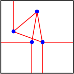 2.343+ | 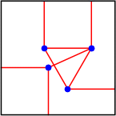 (7 + √7)/4 = 2.411+ | 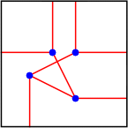 2 + 1/√5 = 2.447+ |
| 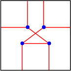 13/5 = 2.6 | 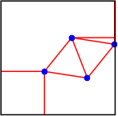 2.626+ | 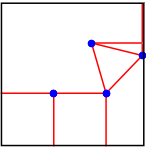 2.721+ | 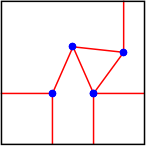 2.806+ | 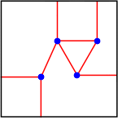 (9 + √7)/4 = 2.911+ |
| 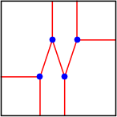 2 + 3/√10 = 2.948+ | 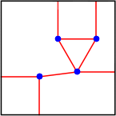 2.992+ | 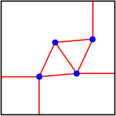 2.996+ | 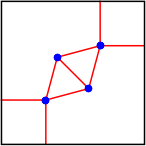 2 + √(3/2) = 3.224+ | 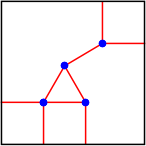 (5 + √3)/2 = 3.366+ |
| 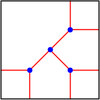 2 + √2 = 3.414+ | 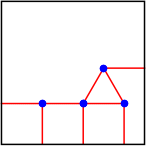 7/2 = 3.5 | 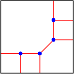 3 + 1/√2 = 3.707+ | 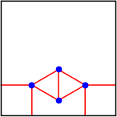 2 + √3 = 3.732+ | 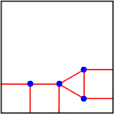 3 + √3/2 = 3.866+ |
| 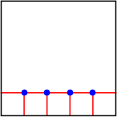 5 |
Here are the known configurations where points may be 1 unit from a corner:
| 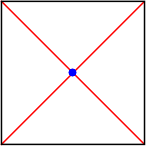 √2 = 1.414+ |
| 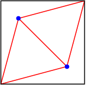 √(3/2) = 1.224+ | 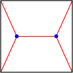 (1 + √7)/2 = 1.822+ | 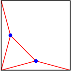 (√2 + √6)/2 = 1.931+ |
| 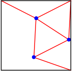 1.782+ | 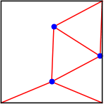 √(2+√2) = 1.847+ | 1.95517+ |
1.296+ | 1.347+ | 1.635+ | 1.680+ | 1.743+ |
1.816+ | 1.862+ | √(7/2) = 1.870+ | 1.95500724+ | 1.95500785+ |
1.95521750+ | 1.95521754+ | (√5 + √3)/2 = 1.984+ | 1.992+ | 1.999+ |
If you can extend any of these results, please e-mail me. Click here to go back to Math Magic. Last updated 8/1/14.